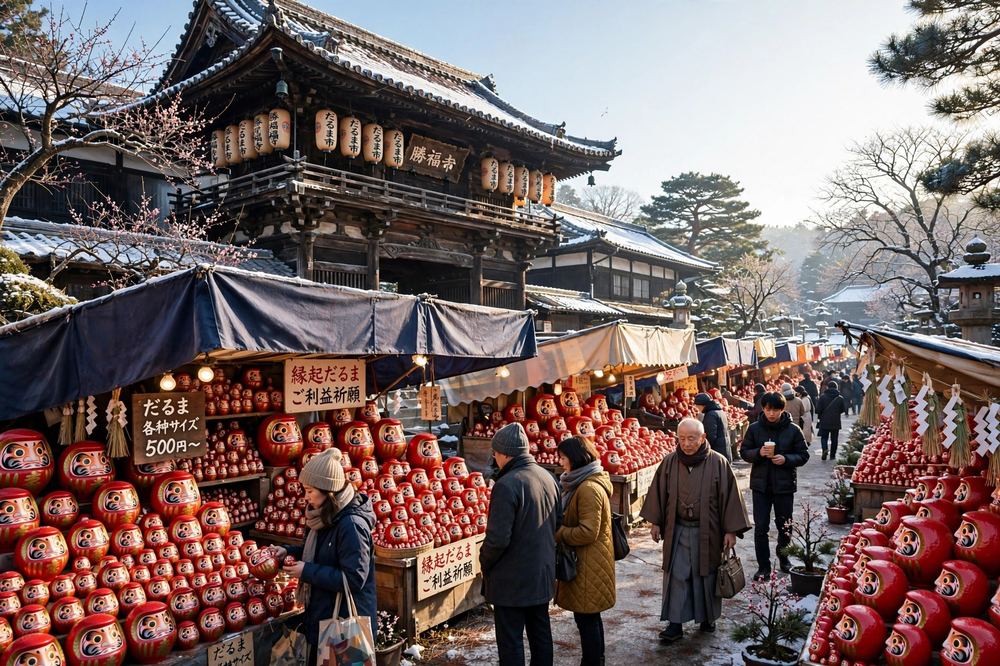

だるま市ガイド ― 日本三大だるま市の時期・場所と歩き方

この記事の結論
だるま市は、年の節目に新しいだるまを買い求める縁日です。日本三大だるま市とされるのは、高崎（1月1日・2日）、深大寺（3月3日・4日）、富士の毘沙門天大祭（旧暦1月7日〜9日）の3つ。市では産地のだるまを直接選べるほか、その場での目入れや、古いだるまを納める受付が設けられる市もあります。開催時間は年によって変わるため、出かける前に公式案内の確認が必須です。
だるま市とは
だるまは一年を目安に新しいものへ替える縁起物です。そのため、年の初めの縁日や寺社の祭礼にあわせて、だるまを専門に売る露店が立ち並ぶ「だるま市」が各地で開かれてきました。新しい一年の願いを託すだるまを選び、役目を終えた古いだるまを納める――買い替えの循環が、そのまま市の形になっています。なかでも規模と歴史で知られる3つの市が、日本三大だるま市と呼ばれています。
日本三大だるま市
| だるま市 | 時期 | 場所 | 特徴 |
|---|---|---|---|
| 高崎だるま市（群馬県高崎市） | 毎年1月1日・2日 | 高崎駅西口駅前通り | 「日本で一番早いだるま市」。産地・高崎のだるまが通りに並ぶ |
| 深大寺だるま市（東京都調布市） | 毎年3月3日・4日 | 深大寺境内と山門周辺 | 厄除元三大師大祭にあわせて開催。約300余の店が並び、僧侶による目入れがある |
| 毘沙門天大祭（静岡県富士市） | 旧暦1月7日〜9日（年により2月ごろ） | 毘沙門天 妙法寺 | 立派な髭をつけただるまが名物。旧正月の3日間でにぎわう |
高崎だるま市 ― 日本で一番早い初市
高崎駅西口の駅前通りを歩行者天国にして開かれる、元日からのだるま市です。産地である高崎の工房のだるまが直接並ぶため、サイズや顔つきを見比べながら選べます。高崎だるまそのものの成り立ちは、高崎だるまとは ― 産地と歴史で詳しく紹介しています。2027年も1月1日・2日の開催が決まっています。
深大寺だるま市 ― 僧侶に目入れをしてもらえる市
深大寺最大の行事「厄除元三大師大祭」にあわせて開かれる、東京に春を呼ぶ市です。境内には大小約300余の縁起だるま店が並びます（深大寺公式）。名物は、元三大師堂前に設けられる目入れ所で、僧侶が新しいだるまに梵字の「阿」を、役目を終えただるまに「吽」を書き入れる習わしです。期間中は「だるまの納め所」も設けられ、古いだるまを持ち込めます。
毘沙門天大祭（富士市）― 旧正月のだるま市
富士市今井の妙法寺で、旧暦1月7日・8日・9日の3日間に開かれます。新暦では年によって日付が動き、2026年は2月23日〜25日でした。七福神の毘沙門天のように立派な髯（ひげ）をつけただるまが有名で（富士市公式）、境内には数十店のだるま店が軒を連ねます。
※開催時間・交通規制・出店の規模は年によって変わります。表の時期は例年の目安です。お出かけ前に、主催者や自治体の公式案内で最新の開催情報をご確認ください。
だるま市の歩き方
- 買う前に「置き場所」を決めておく：市ではつい大きなものを選びがちです。飾る場所の高さを測っておくと、サイズ選びで迷いません。号数の目安はサイズと号数ガイドを参照してください。
- 目入れをどうするか決めておく：その場で入れてもらうか、白目のまま持ち帰って自分で入れるか。作法は目入れの作法の記事にまとめています。
- 古いだるまの納め方を確認する：納め所や供養の受付は市ごとに違います。受付がない市もあるため、持ち込む前に確認を。基本的な考え方はだるまの処分と供養の方法にまとめています。
- 午前中が動きやすい：大きな市ほど午後は混み合います。品揃えと人の流れの両面で、早めの時間がおすすめです。
よくある質問
Q. 日本三大だるま市とはどこですか？
A. 高崎だるま市、深大寺だるま市、毘沙門天大祭（富士市）の3つを指すのが一般的です。時期は高崎が1月1日・2日、深大寺が3月3日・4日、毘沙門天大祭が旧暦1月7日〜9日です。
Q. だるま市ではその場で目入れをしてもらえますか？
A. 市によっては目入れの場が設けられています。深大寺では大祭期間中、元三大師堂前に目入れ所が置かれます。自分で入れたい場合は、白目のまま持ち帰ることもできます。
Q. 古いだるまは市に持って行けば納められますか？
A. 受け付けている市があります（深大寺の「だるまの納め所」など）。常時受け付けではないため、事前の確認をおすすめします。
Q. 開催時間は毎年同じですか？
A. 開催日は例年同じでも、時間や会場の範囲は年によって変わります。当日は交通規制が行われる市も多いため、公式案内で最新情報を確認してください。
まとめ
だるま市は、だるまを「買う・願う・納める」までを一度に体験できる場です。元日の高崎、春の深大寺、旧正月の富士と、季節ごとに市は続きます。行けない年は通販や注文で新しいだるまを迎える方法もありますが、まず一度、産地のだるまが並ぶ市の空気を味わってみてください。
市に行けない方へ ― 名入れ・法人注文のご相談
DARUMA WORKSでは、産地の工房と連携した名入れだるま・オリジナルだるまの相談を受け付けています。事業紹介をご覧のうえ、お問い合わせフォームからご連絡ください。